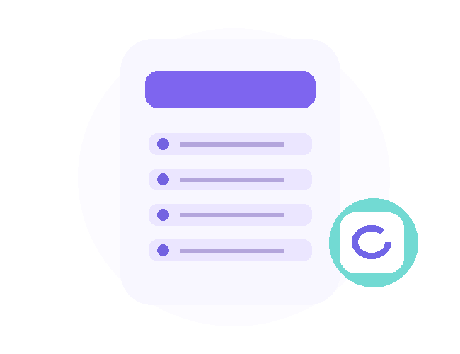

Total Tugas
0Semua tugas tersimpan✦ STAY ON TRACKJadikan hari ini
Jadikan hari ini
lebih produktif.
Kelola aktivitas, jaga fokus, dan capai target harianmu.

Selesai
0Tugas diselesaikanBelum Selesai
0Masih perlu dikerjakanProgress
0%Persentase penyelesaianYOUR PRIORITIES
Tugas Hari Ini
TIME TO FOCUS
POMODOROFocus Session
25:00FOCUS TIME
Waktu fokus yang berkualitas dimulai dari satu sesi.
STAY ORGANIZED
Daftar Tugas
Atur tugas berdasarkan prioritas dan tenggat waktu.
PLAN YOUR WEEK
Weekly Planner
Jadwal tugas berdasarkan tanggal tenggat.
DEEP WORK MODE
Focus Timer
Gunakan teknik Pomodoro untuk bekerja lebih terarah.
25:00
WAKTU FOKUSTimer berjalan selama halaman tetap aktif. Sesi selesai dicatat di browser ini.
PROGRESS INSIGHTS
Analitik Produktivitas
Pantau penyelesaian tugas dan sesi fokusmu.
Tugas Selesai
0Tugas Aktif
0Sesi Fokus
0Menit Fokus
0